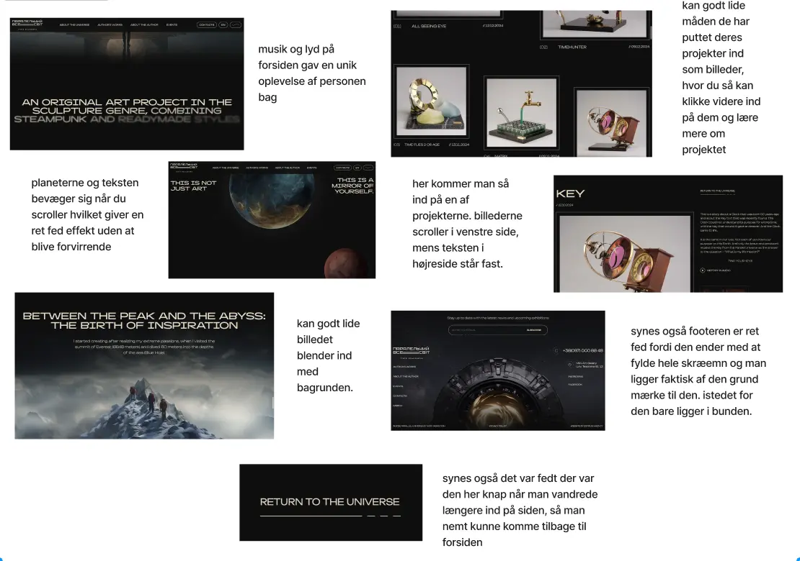
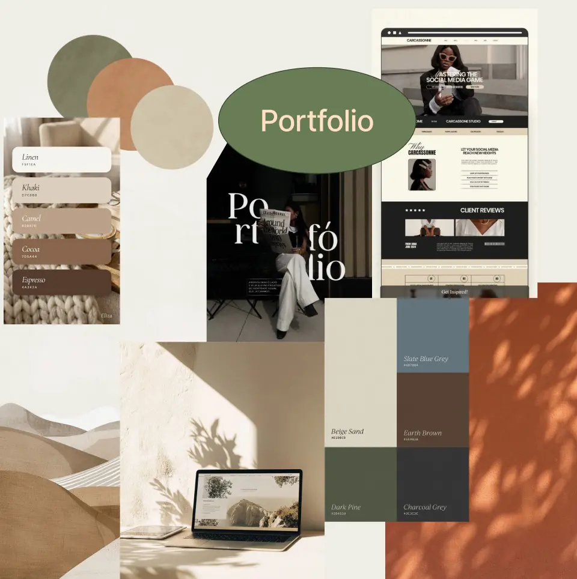
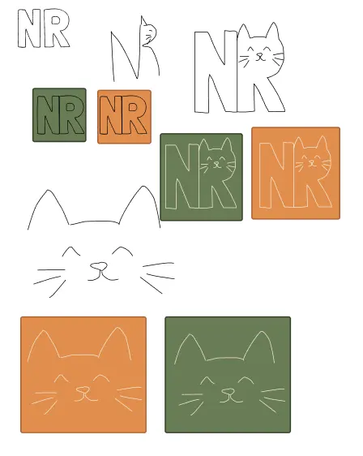
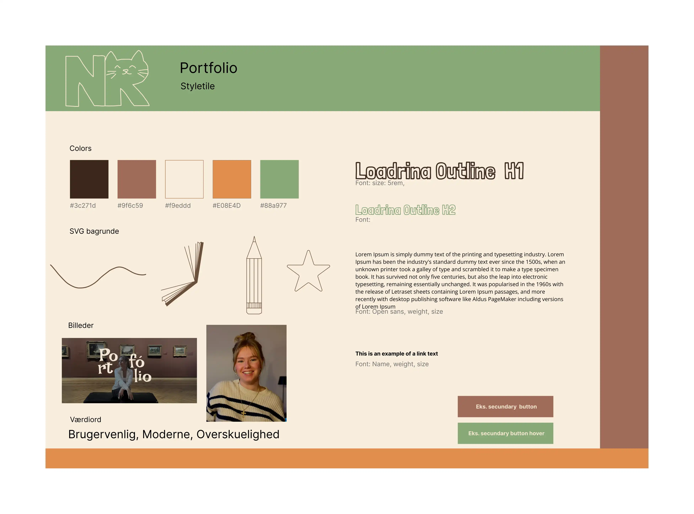
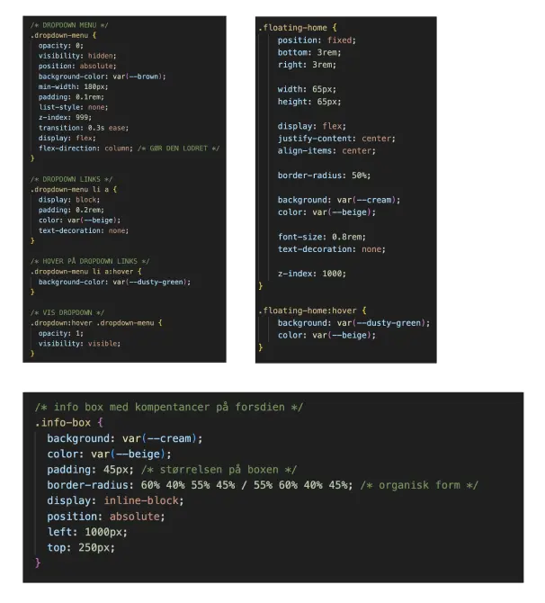

Her beskriver jeg processen, mine tanker,
udfordringer og hvad jeg lærte i projektet.

Jeg startede projektet med desk research, hvor jeg analyserede eksisterende
portfolio-websites med fokus
på deres UX-struktur og informationsarkitektur. Her undersøgte jeg især brugerflows for at
forstå,
hvordan
en bruger bevæger sig gennem et digitalt produkt fra landing page til endt interaktion.
Denne analyse gav mig indsigt i, hvordan navigation, hierarki og interaktive elementer kan
designes, så
der
skabes et intuitivt og brugervenligt flow. Resultaterne fra denne fase dannede grundlag for
den videre
designproces og sikrede en brugercentreret tilgang fra start.

I idéudviklingsfasen udarbejdede jeg et moodboard for at definere den visuelle retning for
mit
portfolio-projekt. Moodboardet bestod af referencebilleder, farver og typografiske
inspirationer.
Disse elementer blev samlet til et visuelt koncept, som fungerede som grundlag for den
samlede
designidentitet. Moodboardet hjalp mig med at sikre en sammenhængende stil og fungerede som
reference
gennem hele designprocessen, så mine valg blev konsistente.

I den konceptuelle fase arbejdede jeg med idéudvikling og skitsering af logo baseret på mine
initialer
NR.
Jeg eksperimenterede med forskellige iterationer, hvor jeg undersøgte hvordan typografi og
form kan
skabe
et personligt brandudtryk. Jeg valgte at transformere bogstavet R til en kat, som et symbol
på min
personlighed, hvilket gav logoet en mere unik og narrativ dimension.

Jeg udarbejdede et styletile for at definere mit visuelle designsystem med farver, typografi
og
UI-elementer.
Styletilet blev testet gennem en Likert-test, hvor jeg fik feedback på det visuelle udtryk.
Resultaterne
viste
udfordringer med kontrast og læsbarhed, hvilket førte til en iterativ justering af
farvepaletten for at
forbedre både tilgængelighed og visuel hierarki.
I prototypingsfasen udviklede jeg en interaktiv wireframe for at teste layout og
UX-struktur.
Prototypen gjorde det muligt at evaluere navigation, informationshierarki og brugerflow
inden kodning.
Jeg arbejdede iterativt med UX-principper som hierarki og konsistens for at optimere
brugeroplevelsen.

I implementeringsfasen omsatte jeg mit design til et funktionelt website ved hjælp af HTML
og CSS.
Jeg arbejdede med semantisk struktur for at sikre god tilgængelighed og SEO. Under
udviklingen arbejdede
jeg
iterativt med debugging og justeringer, så det færdige produkt stemte overens med prototype
og
designprincipper.